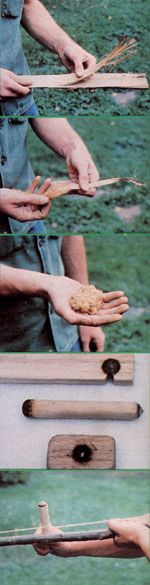

To make tinder, work some light dry wood (such as this cedar bark) with your hands... until the fibers loosen (you can soften any particularly stubborn fibers by pounding them between two rocks)... and you have a light, fluffy bundle... The fireboard, drill and handhold... The bowstring is wound once around the drill...